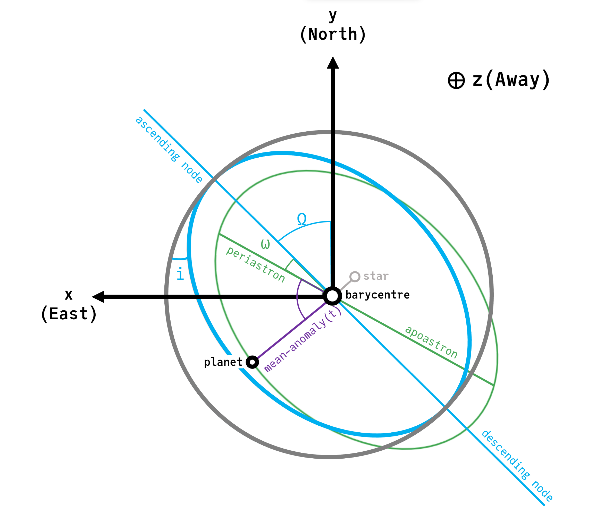

Conventions
Units
| quantity | unit |
|---|---|
| length / semi-major axis | AU |
| mass | solar masses (msun, mjup, mearth are exported multipliers) |
| angles | radians — no degree variants |
epochs (tp, epoch, ref_epoch, solve times) | MJD |
period (P=, period(sys)) | days |
velocities (velx, Cartesian vx) | AU / julian year |
radial velocity (radvel) | m/s |
angular offsets (raoff, decoff) | mas |
proper motion (pmra, pmdec) | mas / year |
parallax (plx) | mas |
frame ra, dec | degrees |
frame pmra, pmdec | mas / year |
frame rv | m/s |
Angles are radians and epochs are MJD everywhere, without exception. There are no _deg variants — the conversion is one function call, and a second spelling of every element is a bug surface.
There is deliberately no units package. Unit types are a performance footgun in the hot loops this package targets. The exported mass constants (mass=1.2msun, mass=5.3mjup, mass=23mearth) cover the case where mistakes actually happen.
The geometric convention

This diagram shows circular (gray), inclined (blue), and inclined eccentric (green) orbits described using the conventions of this package.
The $x$ variable increases to the left in the plane of the sky, consistent with right ascension increasing towards the East. The $y$ coordinate increases upwards towards the North. The $z$ coordinate increases away from the observer.
The ascending node is measured counter-clockwise in the plane of the sky starting from the $y$ (North) axis.
The location of the body along its ellipse is measured from periastron. tp is the epoch of closest approach and therefore sets the position at any time. For bound orbits there are infinitely many equivalent tp values, related by $t_p' = t_p + nP$.
See this PDF for a detailed derivation of projected position, velocity, and acceleration from these coordinates: Derivation.pdf
The frames involved here — the orbit's own plane, and the plane of the sky we project it onto — are covered from first principles by Orbital Mechanics & Astrodynamics: Reference Frames, the Perifocal Frame in which an orbit is flat and two-dimensional, and Right Ascension and Declination.
One convention difference to keep in mind while reading: that text is written for spacecraft around the Earth and measures the node from the vernal equinox in an equatorial frame. Direct imaging and astrometry instead work in the plane of the sky, measuring $\Omega$ from North, with $z$ pointing away from the observer — the diagram above is the authoritative one for this package.
Elements
The canonical element set is a, e, i, ω, Ω, tp, spelled in Unicode. There are no ASCII aliases; i stays i. Alternative parametrizations are constructor groups, not aliases — see Parametrizations.
There is no M element. Mass lives on Body, and an orbit's gravitating mass is derived from the bodies it binds. This avoids the usual collision between M for total mass and M for mean anomaly, and means no per-planet mass bookkeeping at the call site: a star's reflex motion is a query against the barycentre, not a mass ratio you apply by hand. M= survives on Orbit strictly as a labelled compatibility escape hatch.
Period is derived, via period(sys); it is not a field.
Reference epochs are three distinct things
Never let one default to another:
tp— the epoch of periastron passage. An orbital element.epoch— the epoch at which anM0,θ, or Cartesian state is measured. Usually chosen near the data.t0— the osculating epoch,AHL21only. Meaningless underKeplerianApprox, where elements are constant by construction.
The consequence worth repeating: the same element values mean different things under the two propagators, so posteriors from one are not element-for-element comparable with the other.
Topology is static
The hierarchy is structure, not a random variable. Comparing two topologies is discrete model comparison — two models sharing a variables block, compared by evidence — not something to vary in-band during sampling.
What is deliberately absent
τas a constructor keyword — it needs hidden period and reference-epoch state and has no clean meaning under N-body integration.- Degree variants of any angle.
- A units package.
- Macros. The functional API is complete; Octofitter's model block is the single macro layer in the stack.
System,BodyandOrbitin the export list — Octofitter owns those three names unqualified. Import them explicitly or qualify them.